Læringsmål
- Utvikle tverrfagleg kompetanse gjennom tverrfagleg eksponering og samarbeid
- Utvikle kompetanse i skriving og samarbeid
- Grunnleggjande kunnskap om KI
- Djupare kunnskap om utvalde tema innan KI
Innføring i kunstig intelligens for Honours-studentar
Pynta til jul. Ja, vi veit at det er august.
Først det praktiske om emnet, så kva vi ventar av kvarandre, og til slutt ei historisk oversikt over kunstig intelligens: frå draumen hos dei gamle grekarane til agentane som kom i fjor.
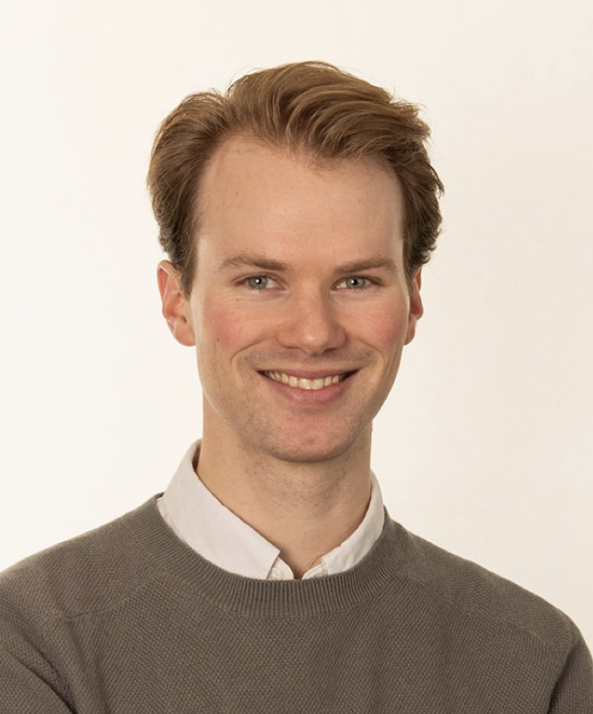
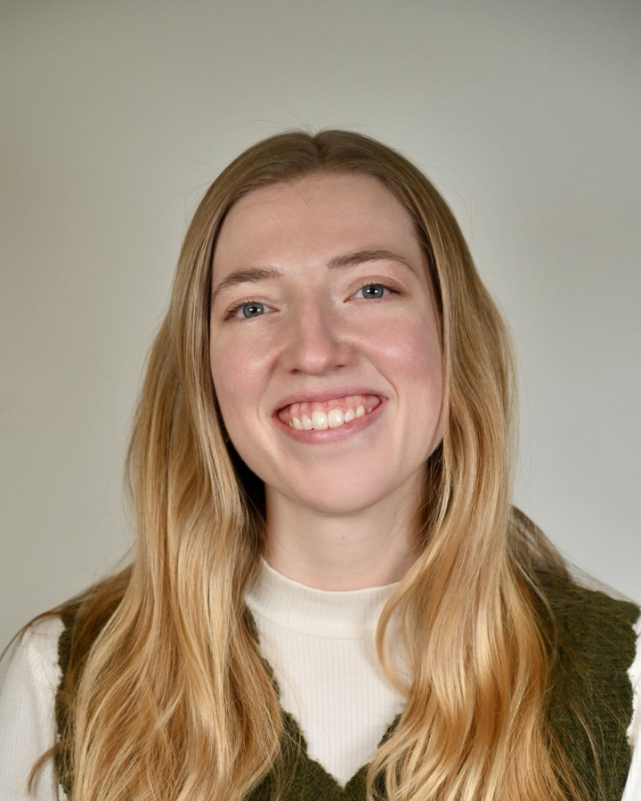
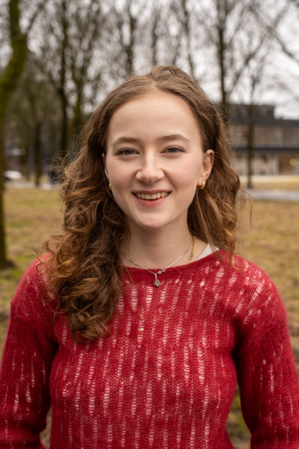
... og ei rekkje gjesteforelesarar gjennom året.
Kunstig intelligens er ikkje eitt fag. I HON1000 ser vi på KI gjennom mange faglege briller, og de kjem sjølve med nokre av dei.
Korleis KI endrar måten vi forskar på, frå proteinfolding til materialvitskap.
Når språkmodellane får verktøy og byrjar handle på eiga hand.
Til dømes berekraft, krig og makt.
Oppgåvene skriv de for å lære, ikkje for å levere eit best mogleg produkt. Vi bryr oss ikkje om skrivefeil og klønete formuleringar, innanfor rimelege grenser.
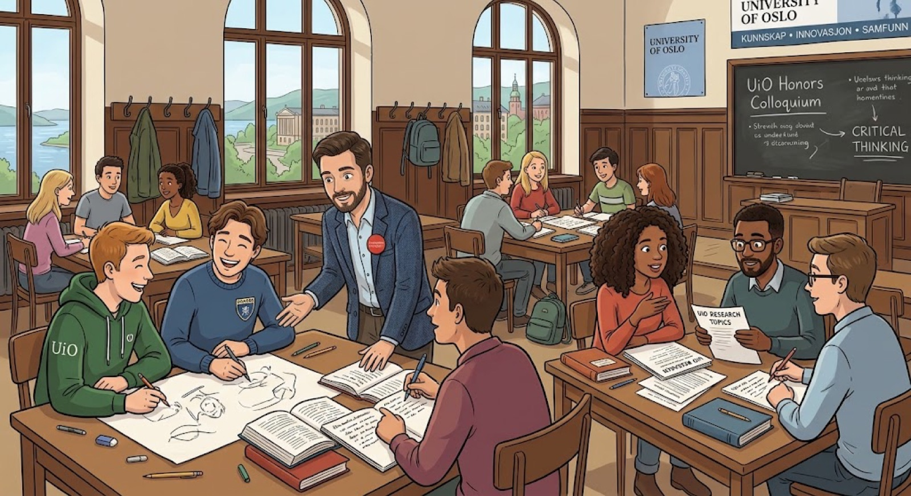
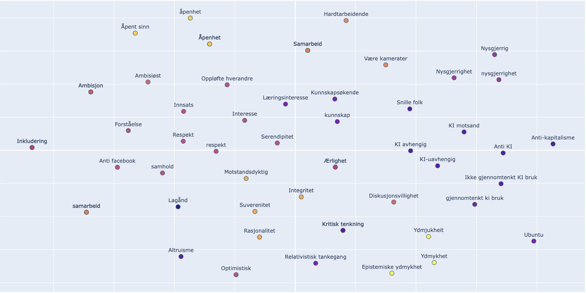
Spørsmål om det praktiske?
Historia om kunstig intelligens har fire aktar: draumen, fødselen, vinteren og revolusjonen.
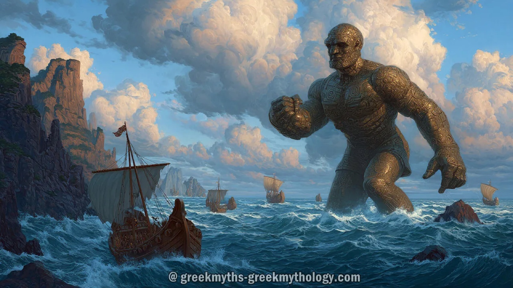
Alt dei gamle grekarane drøymde om kunstig intelligens. I gresk mytologi finst det ein gigantisk robot av bronse, Talos. Han vart skapt av guden Hefaistos og var ein autonom vaktar for øya Kreta. Tre gonger om dagen patruljerte han øya og kasta steinar på fiendtlege skip.
Det vesentlege, det som skil Talos frå gudar og menneske, er at han er bygd, ikkje fødd, men likevel ein intelligent og sjølvstendig aktør. Altså kunstig intelligens.
Argumentet er gyldig viss og berre viss konklusjonen følgjer av premissane.
Ein annan forløpar er Aristoteles, som grunnla den formelle logikken. Det førte til tanken om at ein kanskje kan mekanisere logikken, og dermed lage kunstig intelligens. I filosofien kan ein forresten bruke nesten ei heil masteroppgåve berre på å avklare kva omgrepet intelligens tyder.
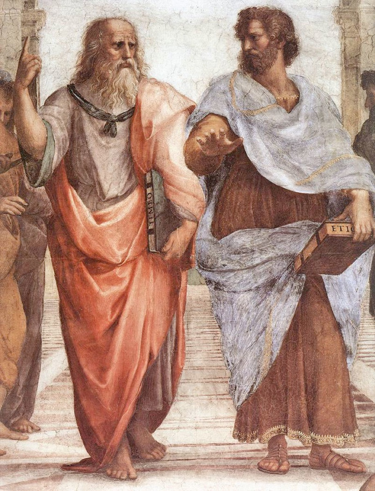
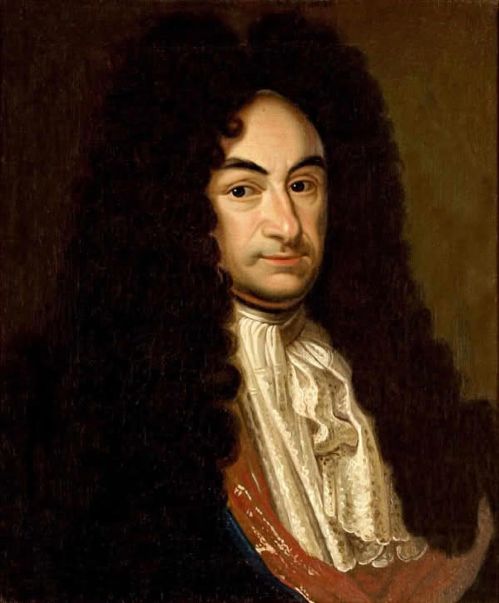
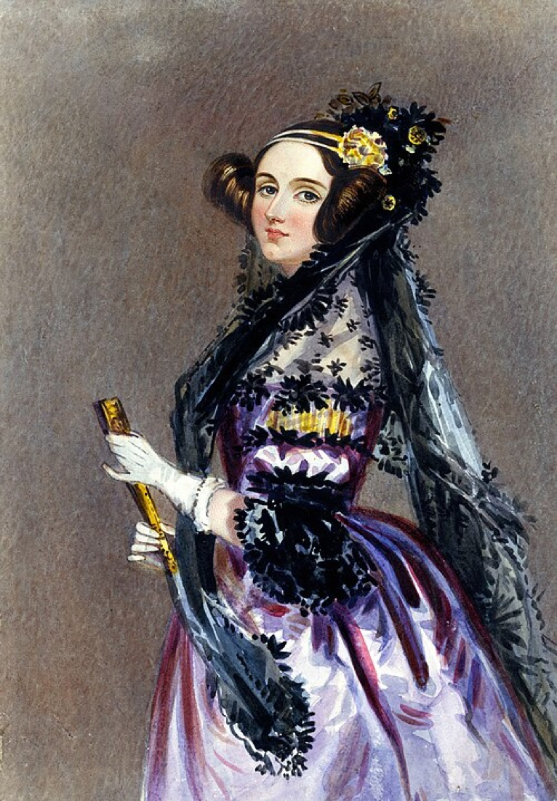
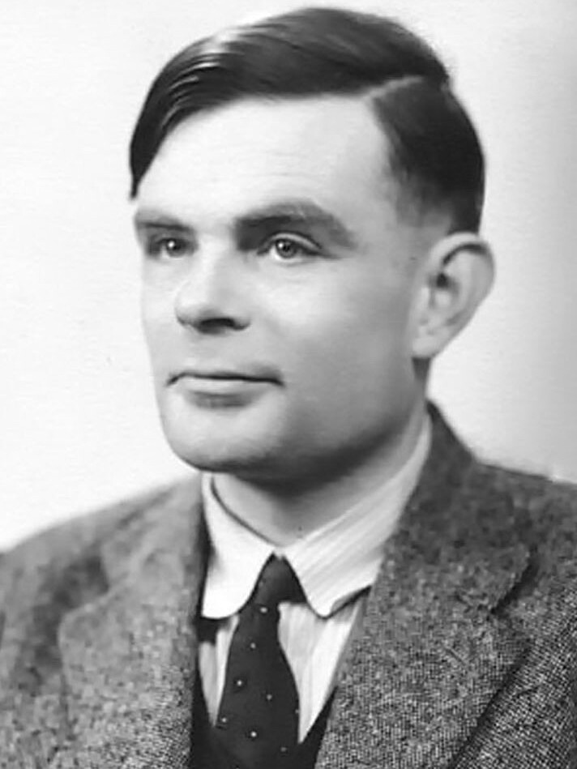
Ada Lovelace skreiv den første algoritmen som var meint for ei maskin: ein metode for å rekne ut Bernoulli-tal. Det som gjer henne kjend, er at ho i detalj skildra korleis operasjonane skulle gjennomførast, slik at ei maskin kunne utføre dei. Ho såg òg for seg at datamaskiner kunne lage musikk.
I 1936 skildra Alan Turing ei maskin som kan rekne ut alt som kan reknast ut.
No har vi tanken om at all kunnskap kan formaliserast i eit universelt språk, og trua på at ein logisk kalkulator kan bruke dette språket til å rekne ut sanningar. Det er frå Leibniz. Vi har fått ei skildring av ei maskin som kan rekne ut alt som kan reknast ut, frå Turing.
Og så kjem dei digitale datamaskinene. Dei er faktisk Turing-maskiner: i prinsippet kan dei rekne ut alt som kan reknast ut. Det førte til ein enorm optimisme.
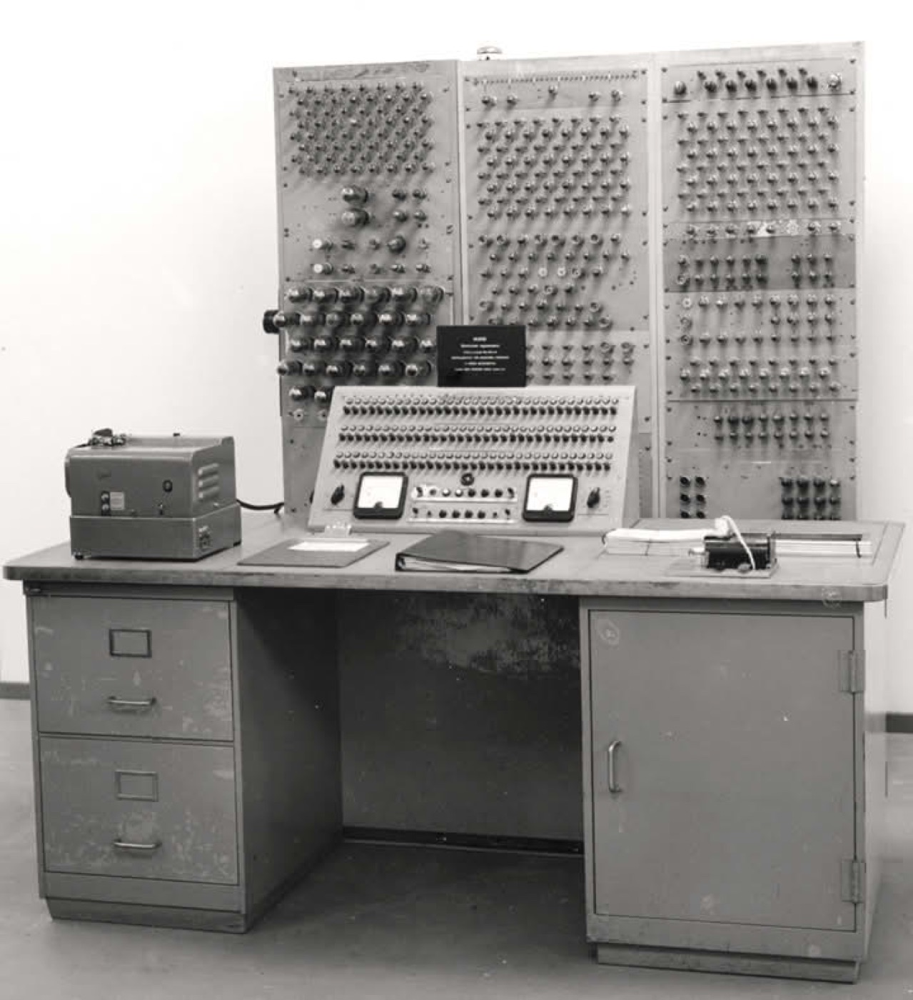
Kan ei maskin produsere ein samtale som er umogleg å skilje frå ein menneskeleg samtale?
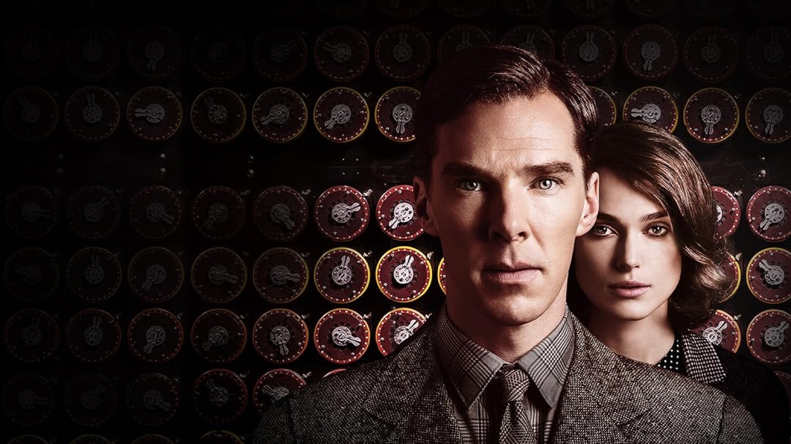
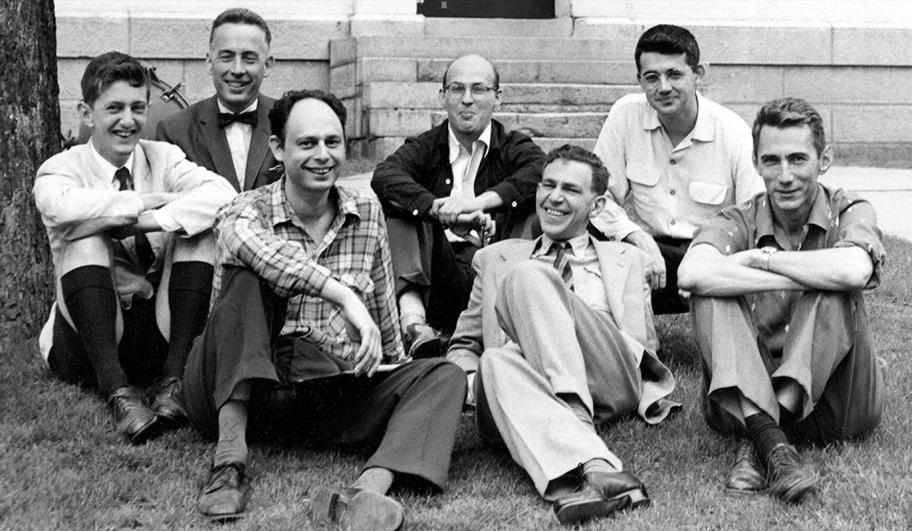
We propose that a 2-month, 10-man study of artificial intelligence be carried out during the summer of 1956 at Dartmouth College in Hanover, New Hampshire. The study is to proceed on the basis of the conjecture that every aspect of learning or any other feature of intelligence can in principle be so precisely described that a machine can be made to simulate it. An attempt will be made to find how to make machines use language, form abstractions and concepts, solve kinds of problems now reserved for humans, and improve themselves. We think that a significant advance can be made in one or more of these problems if a carefully selected group of scientists work on it together for a summer. Forslaget til Dartmouth-konferansen, 1956. Verdt å lese i sin heilskap.
If one could devise a successful chess machine, one would seem to have penetrated to the core of human intellectual endeavor. Newell og Simon, 1958
Intelligence can in principle be so precisely described that a machine can be made to simulate it.Dartmouth, 1956
Nokre suksessar fekk den symbolske KI-en altså. Deep Blue hadde ein del sjakkopningar programmerte inn, og utover i partiet var den god fordi den kunne rekne seg langt framover og velje trekk med gode sjansar for å leie mot siger.
Men ingen generell intelligens: eit sjakkprogram som ikkje klarer noko anna enn sjakk.
Dette er viktig. På lysarket var det teikna ekstra stygt for at de skulle hugse det. Her fekk det ei stjerne i staden.
Kvar pære er ei hending. Legg merke til kor tett dei heng etter 2012.
Turing spør ikkje om maskiner kan tenkje, men om dei kan snakke som oss.
Omgrepet kunstig intelligens får namn.
Rosenblatts maskin som lærer av døme: eit enkelt kunstig nevron med vekter og ein terskel.
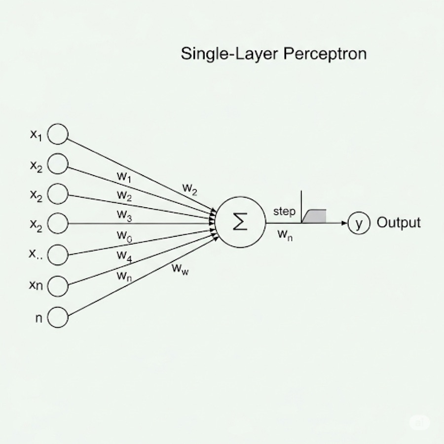
Boka til Minsky og Papert viser kva eitt lag ikkje kan lære, og entusiasmen kjølnar.
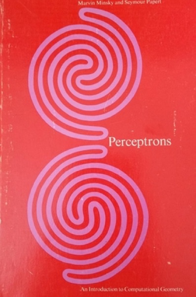
Tidslinja er litt uklar: metoden finst i 1970, blir brukt på nevrale nett rundt 1982, og slår gjennom i 1986. Med han kan ein trene nett med fleire lag.
Konvolusjonsnett: nett som «ser», bygde etter mønster frå synssystemet.
Ein siger for symbolsk KI og rå reknekraft, ikkje for læring.
Vinn ImageNet-konkurransen med stor margin. Djuplæringa tek av.
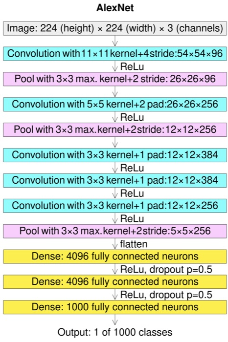
Ord blir vektorar. Tyding blir noko ein kan rekne med.
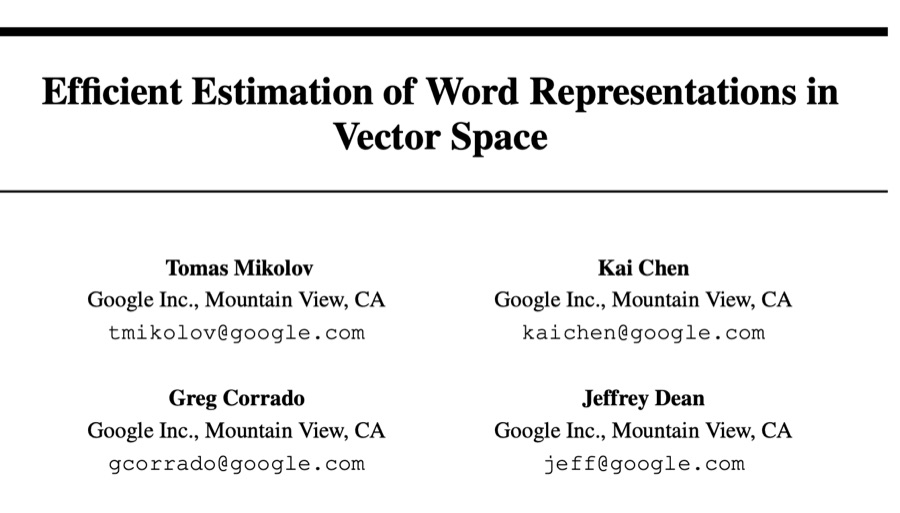
To nett i duell lærer å lage bilete som ser ekte ut. Opphavet til deepfakes.
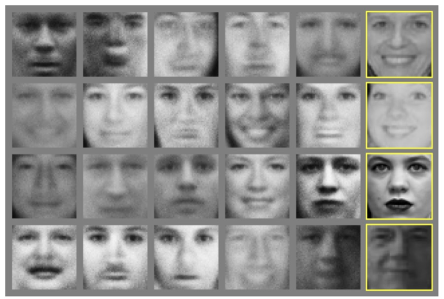
Go var rekna som utanfor rekkjevidde i mange år framover.
Lærer sjakk, shogi og go frå null, berre ved å spele mot seg sjølv.
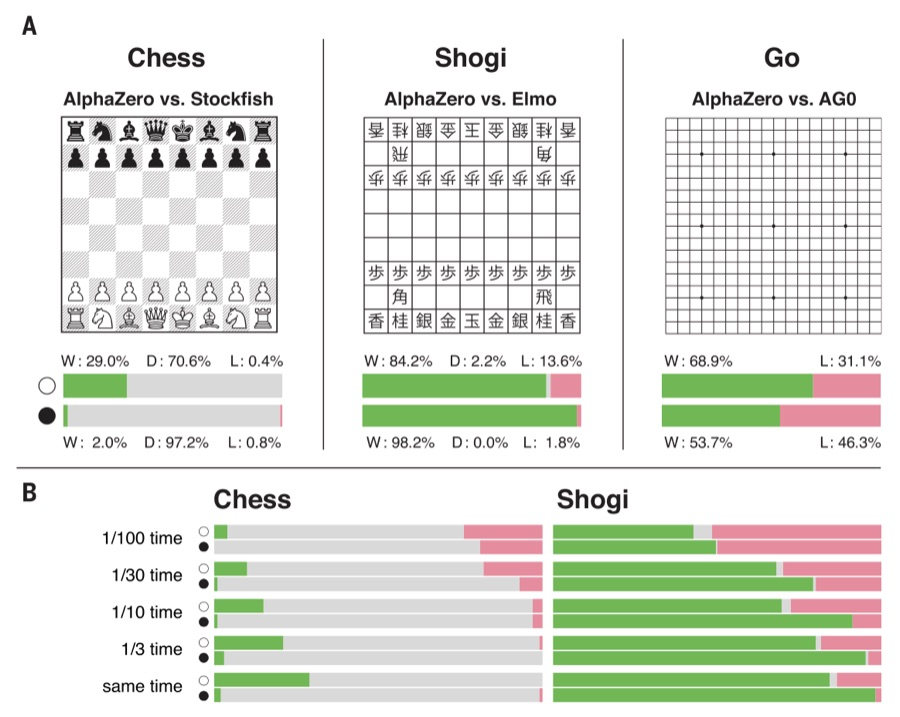
«Attention Is All You Need». Arkitekturen bak GPT og dei andre store språkmodellane.
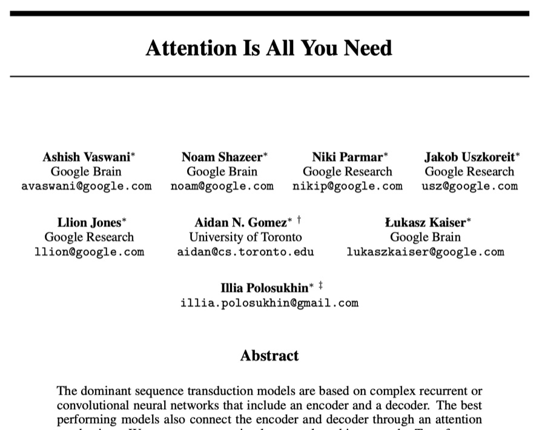
Proteinfolding, eit femti år gammalt problem i biologien, blir i praksis løyst.
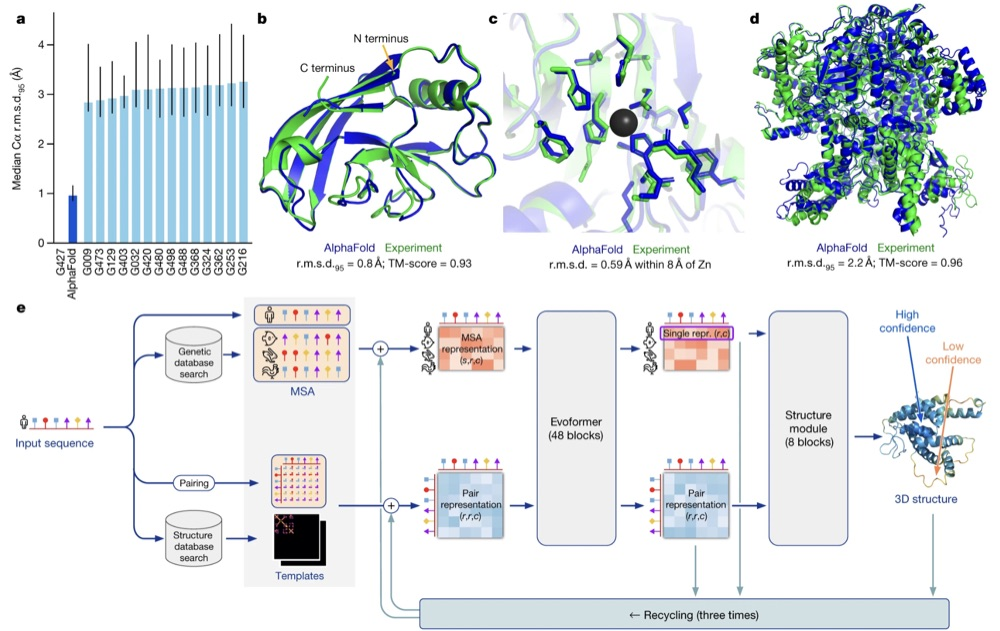
DDPM: bilete frå støy. Grunnlaget for DALL·E, Midjourney og Stable Diffusion.
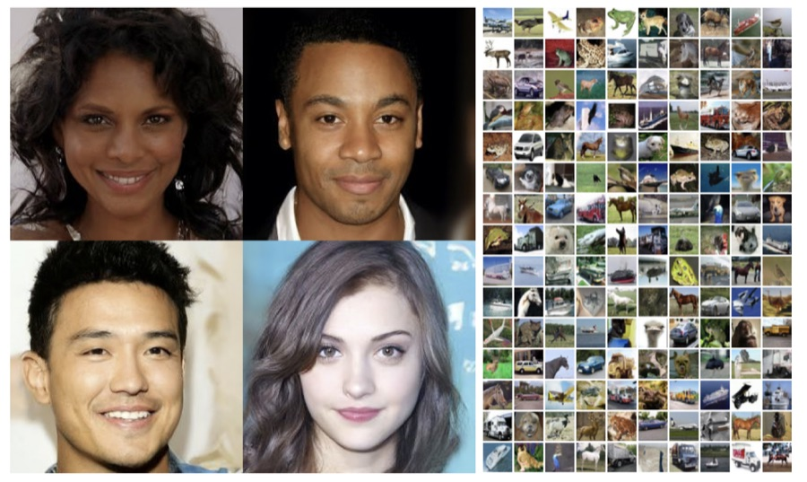
No kjem alle desse teknologiane ut i verda og blir til produkt, slik som ChatGPT.
Korleis kan ei maskin gjette neste ord så godt at det liknar forståing? Vi opnar transformeren.
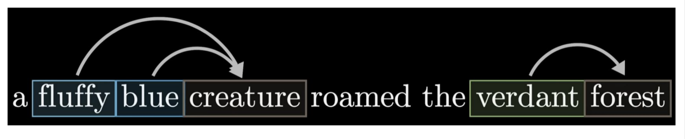
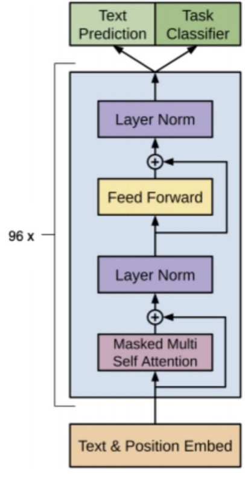
Same oppskrift begge gongene: skriv, send vidare, bygg vidare. Poenget er breidde, så ikkje slå opp definisjonen. Vi vil at de skal arbeide med ideane til kvarandre.
Kva meiner du er intelligens?
Kvar person i gruppa skriv ned éin til tre idear, på éin til tre lappar.
Kva trur du, og kva vil du, at vi skal lære i HON1000?
Same metode som i stad. Vi justerer etter kor mykje tid vi har.